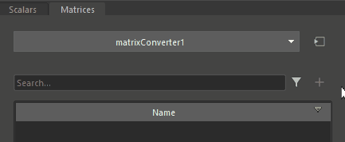
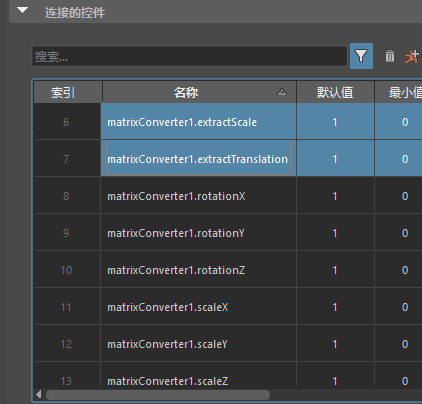
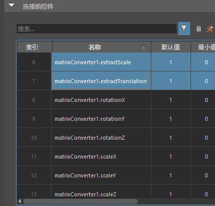
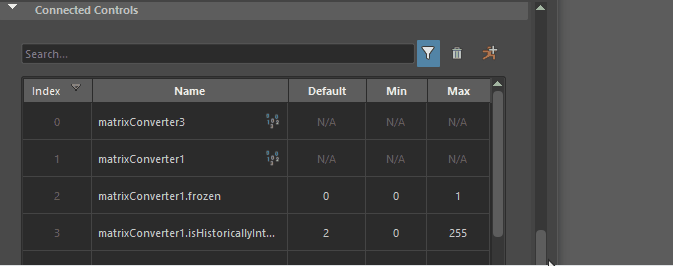
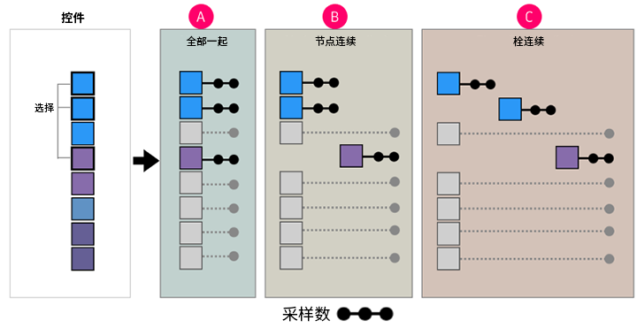

“控件收集器”(Control Collector)选项卡是创建 ML 变形器时使用的属性编辑器(Attribute Editor)选项卡之一。
“控件收集器”(Control Collectors)用于配置和组织影响或驱动 ML 变形器近似的复杂变形的属性（控件）。此外，您还可以设置单独的“控件收集器”(Control Collector)以指定在“姿势生成”(Pose Generation)期间应操纵的属性，以创建一组可用于训练 ML 变形器的示例姿势。如果要对控件使用矩阵转化器，但也要生成姿势，则设置单独的“控件收集器”(Control Collector)非常有用。
有关如何创建 ML 变形器的信息，请参见创建 ML 变形器和使用单独的目标几何体创建 ML 变形器。
为对象添加 ML 变形器后，切换到属性编辑器(Attribute Editor)的“控件收集器”(Control Collector)选项卡：
- 单击“选择控件输入”(Select Control Input)图标 。
- 展开“控制值”(Control Values)菜单，然后选择“选择”(Select)、“创建”(Create)或“指定”(Assign)控件收集器。
您还可以在“控制值”(Control Values)菜单的“ML 变形器”(ML Deformer)选项卡中创建和指定不同的“控件收集器”(Control Collectors)。
“属性编辑器”(Attribute Editor)的“控件收集器”(Control Collector)选项卡
“添加控件”(Add Controls)列表
“添加控件”(Add Controls)列表显示选定节点上可能用作变形潜在控件的每个属性。
控件属性有两个选项卡：“标量”(Scalar)和“矩阵”(Matrix)。“标量”(Scalar)属性通常是已设置动画的浮点值，这些值影响近似的复杂变形，例如，扭曲变形器的“开始/结束”(Start/End)角度。
“矩阵”(Matrix)属性通常用于变换/关节，并允许提取平移、旋转和缩放值。通过这种机制，可以将旋转转化为更适合机器学习的表示，如四元数或双轴/三轴。与使用指定为“标量”(Scalar)属性的各个旋转组件相比，使用这些旋转的替换表示可以产生更好的结果。
“标量”(Scalars)选项卡
- “可用控件”(Available Controls)字段
- 使用“可用控件”(Available Controls)字段按名称搜索属性。可以使用通配符过滤搜索。
- “可用控件”(Available Controls)过滤器

- 使用“可用控件”(Available Controls)过滤器按类型缩小可用属性的范围。
- 添加控件(Add Controls)

- 将选定控件添加到“连接的控件”(Connected Controls)列表。也可以通过单击鼠标右键并从上下文菜单中选择“添加选定对象”(Add Selected)或“全部添加”(Add All)来添加控件。
- 名称(Name)
- 单击以选择要添加到“连接的控件”(Connected Controls)的属性。按住 Ctrl 或 Shift 键并单击以选择多个属性，然后单击“添加控件”(Add Controls) ，或单击鼠标右键，然后从上下文菜单中选择“添加选定对象”(Add Selected)或“全部添加”(Add All)。
“矩阵”(Matrices)选项卡
我们建议在具有深度关节层级或变换驱动变形的情况下使用“矩阵”(Matrixs)选项卡设置，因为矩阵数据可用于提取旋转并将其转化为更适合机器学习的格式。
- 矩阵转化器连接下拉列表
-

- 单击此按钮可显示用于“创建”(Create)、“选择”(Select)、“编辑”(Edit)或“删除”(Delete)自定义矩阵转化器节点的选项，该节点可用于“矩阵”(Matrices)列表中选定的属性。单击“创建”(Create)以打开矩阵转化器选项(Matrix Converter Options)对话框，在该对话框中可以创建转化器并选择要提取的变换以及表示旋转的格式。
- “可用矩阵”(Available Matrices)字段
- 使用“可用矩阵”(Available Matrices)字段可列出属性名称。可以使用通配符过滤搜索。
- “可用矩阵”(Available Matrices)过滤器
- 使用“可用控件”(Available Controls)过滤器按类型缩小可用属性的范围。
- 添加控件(Add Controls)
- 将选定控件添加到“连接的控件”(Connected Controls)列表。
- 名称(Name)
- 单击以选择要添加到“连接的控件”(Connected Controls)的属性。按住 Ctrl 或 Shift 键并单击以选择多个属性，然后单击“添加控件”(Add Controls) 。
- 矩阵转化(Matrix Conversion)
- 使用此菜单可以从现有矩阵转化器节点中进行选择，也可以创建一个节点。矩阵转化器节点允许从矩阵中提取旋转、缩放和平移分量。旋转可以转化为可能更适合机器学习的其他格式。
“连接的控件”(Connected Controls)列表
 
“连接的控件”(Connected Controls)列表，带有标量（左）和矩阵（右）
- “搜索”(Search)字段
- 输入属性名称的前几个字母可查找属性。可以使用通配符（如“left_*”）来帮助查找。
- 过滤器(Filter)
- 单击可展开一个列表，从中可以有选择地选择要查看的属性。
- 移除选定对象(Remove Selected)
- 单击可从“连接的控件”(Connected Controls)列表中移除任何选定的控件。
- 生成姿势(Generate Poses)
- 单击可使用本主题中下方的“姿势生成设置”(Pose Generation Settings)中的设置在时间滑块中生成随机姿势。
- 食指(Index)
- 属性在数组中的位置。
- 名称(Name)
- “连接的控件”(Connected Control)属性的名称。
- 默认值(Default)/最小值(Min)/最大值(Max)
- 这些值在姿势生成期间使用。当为姿势生成随机设置控件时，将在“最小值”(Min)和“最大值”(Max)之间选择一个值。根据“外部模式”(Outsider Mode)的设置，当没有为姿势生成随机设置控件时，会改为为其指定默认值。
- 在此部分中，可以调整所有三个值。
“连接的控件”(Connected Controls)上下文菜单
在“连接的控件”(Connected Controls)列表中的单元上单击鼠标右键时，将显示以下选项。
- 编辑(Edit)
- 用于编辑“默认值”(Default)、“最小值”(Min)和“最大值”(Max)。
- 选择节点(Select Node)
- 在“视口”(Viewport)、“大纲视图”(Outliner)和“节点编辑器”(Node Editor)中选择相应节点并高亮显示。
- 选择转化器节点(Select Converter Node)
- 选择应用于一个或多个相应选定矩阵属性的矩阵转化器节点。
- 添加矩阵转化器(Add Matrix Converter)
- 使用此菜单可以从现有矩阵转化器节点中进行选择，也可以创建新节点以与选定矩阵属性关联。矩阵转化器节点允许从矩阵提取旋转、缩放和平移分量。旋转可以转化为可能更适合机器学习的其他格式。
- 移除选定对象(Remove Selected)/移除全部(Remove All)
- 从列表中移除选定的属性。使用“移除全部”(Remove All)可移除“连接的控件”(Connected Controls)列表中列出的每个属性。
- 展开转化器(Expand Converters)
-

“展开转化器”(Expand Converters)选项
- 用于显示连接到矩阵转化器的控件。当要查看控件收集器/ML 变形器使用的所有控件的列表时，请使用此选项。可能需要调整“属性编辑器”(Attribute Editor)的大小，才能查看所有列。
- 根据限制设置当前值(Set Current Value from Limit)
- 将相应属性的值设置为“默认值”(Default)、“最小值”(Min)或“最大值”(Max)。
- 根据当前值设置限制(Set Limit from Current Value)
- 根据相应属性的当前值设置“默认值”(Default)、“最小值”(Min)或“最大值”(Max)。
- 根据帧范围中的值设置限制...(Set Limits from Values in Frame Range...)
- 打开一个对话框，在该对话框中可以根据时间范围设置限制。
-
- 时间范围(Time Range)
- 从以下选项选择：
- 全部(All)：基于整个动画的限制。
- 选择(Selection)：
- 开始/结束(Start/End)：激活“开始”(Start)和“结束”(End)，以设置自定义帧范围。
- 时间滑块(Time Slider)：使“时间范围”(Time Range)基于当前在“时间滑块”(Time Slider)上显示的范围。
- 延伸限制(Extend Limits)
- 允许按“延伸限制”(Extend Limits)滑块中设置的量超出指定的限制。
- 生成姿势(Generate Poses)
- 使用“姿势生成设置”(Pose Generation Settings)中的设置，在时间滑块中生成随机姿势。这些姿势提供控件对生成的变形的影响示例，用于训练机器学习模型。
- 请参见下文中的“姿势生成设置”(Pose Generation Settings)。
- 控件设置(Control Setup)
- 用于导入或导出控件设置。
- 刷新(Refresh)
- 使用最新更改更新列表。
姿势生成设置(Pose Generation Settings)
- 应用于控件(Apply to Controls)
- 选择方法来确定在姿势中使用哪些控件进行激活。
- 全部(All)
- 已过滤(Filtered)
- 选定(Selected)
- 生成模式(Generation Mode)
- 选择姿势生成模式。下图显示了为 3 个选定控件生成姿势的过程。
- 每个框表示一个标量控件
- 颜色表示每个控件所属的节点。蓝色是一个节点，紫色是另一个节点，依此类推。
- 灰显控件表示未对姿势激活的控件，因为未选择这些控件
- 黑点表示已设置关键帧的随机值，偏移显示它们在“时间滑块”(Time Slider)上的位置。（请参见“姿势数”(Number of Poses)设置中的选项。）
姿势生成模式：A.全部随机化(Randomize All Together) B.连续随机化节点(Randomize Nodes Consecutively) C.连续随机化栓(Randomize Plugs Consecutively)
-
- 全部随机化(Randomize All Together)
- 经典方法。所有选定的控件都基于激活模式/激活率使用。
- 连续随机化节点(Randomize Nodes Consecutively)
- 按父节点对控件进行分组。每个组都将为其生成一组帧。“连续随机化节点”(Randomize Nodes Secuntily)等同于选择一个节点上的控件，生成姿势，然后对后续节点执行相同的操作。
- 连续随机化栓(Randomize Plugs Consecutively)
- 在一组帧中，将为每个栓（控件）设置一个关键帧。激活设置将灰显，因为将为其组中的每个帧激活每个控件。“连续随机化栓”(Randomize Plugs Consecutively)等同于一次选择每个控件并生成姿势。
- 姿势数(Number of Poses)
-
设置要生成的姿势数。生成的姿势总数取决于在“外部模式”(Outsider Mode)中设置的“生成模式”(Generation Mode)，因为它是按生成组设置的。
-
使用上面的姿势生成模式图，将“姿势数”(Number of Poses)设置为 10，结果将为：
-
A - 1 组，共 10 个姿势。
-
B - 2 组，每组 10 个姿势（共 20 个）。
-
C - 3 组，每组 10 个姿势（共 30 个）。
-
- 开始关键帧位于(Start Keys at)
- 设置从哪一帧开始生成姿势。
-
- 在最后一个关键帧之后(After Last Key)
- 由于姿势是通过在每个控制参数曲线上添加关键帧而生成的，因此使用“在最后一个关键帧之后”(After Last Key)来在最后一个关键帧之后添加新姿势，以避免覆盖任何现有姿势。
- 自定义开始帧(Custom Start Frame)
- 启用“自定义开始帧”(Custom Start Frame)字段，以设置姿势生成开始的帧。
- 当前帧(Current Frame)
- 设置姿势生成开始的帧。
- 自定义开始帧(Custom Start Frame)
- 输入姿势生成开始的帧编号。
- 外部模式(Outsider Mode)
- 选择一种方法来设置生成姿势时未激活的控件会发生什么情况，例如，通过选择、生成模式、激活率等。
-
- 忽略(Ignore)：不为未激活的控件创建关键帧。
- 设置为默认值(Set to Default)：控件的关键帧值设置为默认值。
- 设置为当前(Set to Current)：控件的关键帧值设置为激活“生成姿势”(Generate Poses)时的值。
- 激活模式(Activation Mode)
- 用于指定控制值的子集。
- 激活是针对特定姿势/帧为控件提供新值/随机值的过程。例如，如果有 100 个控件，则不需要在每个姿势中更改所有 100 个控件。相反，您希望姿势中只有控件的一个子集被提供值（激活）。例如，您可能需要左臂的所有控件
- 这样可以更轻松地了解控件更改与对几何体的影响之间的关联。
-
- 全部(All)
- 使用所有姿势/帧进行激活。
- 百分比(Percentage)
- 允许使用“激活率”(Activation Rate)滑块设置“最小值”(Min)和“最大值”(Max)的百分比，以选择随机化（每个姿势）。